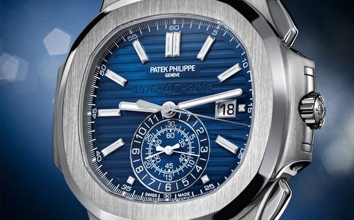
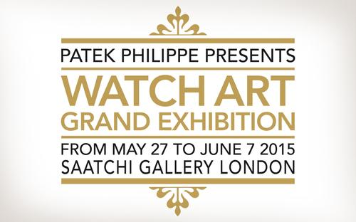
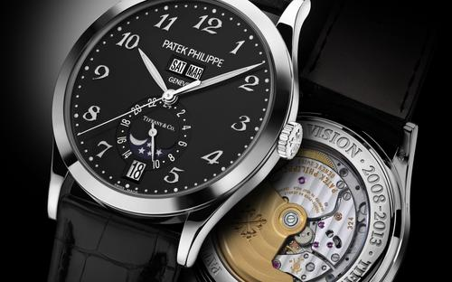
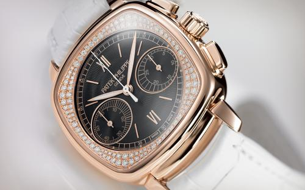
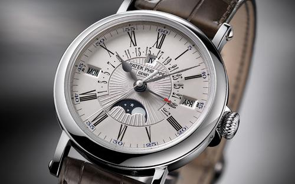

七月 2017
NEW YORK 2017 SPECIAL EDITIONS
As a highlight to “The Art of Watches Grand Exhibition New York 2017” from July 13 to 23 at Cipriani (...)
六月 2017
PATEK PHILIPPE PARTNERS WITH KIPS BAY BOYS AND GIRLS CLUB FOR THE ART OF WATCHES GRAND EXHIBITION NEW YORK
New York, NY 14th of June 2017 – Patek Philippe is pleased to announce a collaboration with the Kips (...)
六月 2017
THE ART OF WATCHES GRAND EXHIBITION NEW YORK FAMILY DAY
Patek Philippe announces The Art of Watches Grand Exhibition New York Family Day, to take place on (...)
三月 2017
PATEK PHILIPPE ANNOUNCES A U.S. HISTORIC ROOM
Patek Philippe has curated a collection of notable timepieces from iconic U.S. collectors to be (...)
三月 2017

百達翡麗參與二零一七年巴賽爾世界鐘錶珠寶展
兩項誌慶，兩錶登場，令人喝采。百達翡麗創業一百七十八年來發展不息，碩果纍纍，各種周年紀念數量自然增長，促使這家日內瓦鐘錶製造商創製各款紀念時計，重溫不同盛事。Aquanaut系列至二零一七年已面世二十 (...)
三月 2017
百達翡麗AQUANAUT編號5168G腕錶
為廿載當代悠閒時尚加冕。百達翡麗Nautilus時計獨一無二，於二零一六年誌慶面世四十周年。踏入二零一七年，旗下另一時計系列亦踏入周年紀念：百達翡麗Aquanaut (...)
三月 2017
百達翡麗CALATRAVA編號 5180/1R-001「SQUELETTE」腕錶
玲瓏剔透，高雅不凡。240自動上弦超薄機芯面世四十周年，選以Calatrava鏤空腕錶彰顯機芯特色適合不過。時計自二零零八年起已是百達翡麗恆常生產系列的作品之一。踏入二零一七年，新款Calatrava (...)
三月 2017
CALATRAVA編號 6006G腕錶
平面圖形設計典雅，240自動上弦超薄機芯附小三針別樹一幟，二者匹配成雙。新款Calatrava (...)
三月 2017

CALATRAVA編號 4899/900高級珠寶腕錶
融會製錶與寶石鑲嵌工藝，諧和無間。編號4899高級珠寶女裝腕錶，全然展示百達翡麗揉合寶石鑲嵌知識與製錶工藝的能耐。腕錶集白金、珍珠母、頂級無瑕Wesselton (...)
三月 2017
百達翡麗CALATRAVA編號5089G「AZULEJOS」腕錶
正宗琺瑯花磚圖案，錯視效果立體逼真。適逢二零一七年巴塞爾世界鐘錶珠寶展，百達翡麗呈獻兩款Calatrava限量時計，每款皆結合傳奇240自動上弦超薄機芯與一項特別工藝而成。所指工藝即百達翡麗視為饒富文 (...)
三月 2017

百達翡麗編號5320G腕錶
新款萬年曆時計，永恆象徵。百達翡麗編號5320G新款萬年曆腕錶標誌永恆。時計能夠自動指出二十八、三十與三十一日的月份，並辨識每四年二月二十九日為閏日。腕錶設計恆久流麗，讓人一瞥得知古今未來。編號532 (...)
三月 2017
百達翡麗240機芯踏入四十年周年
由一九七七年問世至最新Calatrava編號 6006腕錶登場，歷年半擺動七十六億次，點滴累積傳奇。四十年 (...)
十二月 2016
PATEK PHILIPPE CELEBRATES THE 20TH ANNIVERSARY OF ITS "GENERATIONS" CAMPAIGN AND OF THE PATEK PHILIPPE MAGAZINE
1996 was a pivotal year for Patek Philippe. It saw the inauguration of the manufacture complex in (...)
十一月 2016
PATEK PHILIPPE: THE AUTHORIZED BIOGRAPHY
The definitive history of the legendary Swiss manufacture. Written by Nicholas Foulkes, an acclaimed (...)
十月 2016

2017年纽约钟表艺术展
百达翡丽非常荣幸地宣布，2017年纽约钟表艺术展将于明年7月13日至23日在纽约第42大街Cipriani大厦举行。这场为期十天的公开展览旨在呈现百达翡丽渊源流传的制表传统，回顾品牌178年的悠久历史 (...)
九月 2016
百达翡丽NAUTILUS系列诞生四十周年
2016年，百达翡丽庆祝其休闲优雅的Nautilus系列诞生40周年。对于众多经典制表工艺的爱好者与收藏家而言，这是一个值得铭记的时刻。回顾1976年以来的这段发展历程，我们可以发现，虽然整个世界已经 (...)
八月 2016
PATEK PHILIPPE CALATRAVA REF. 7200/200R
The launch of Patek Philippe's Calatrava Ref. 7200/200R ushers in a new form of gemsetting artistry (...)
七月 2016
THE PATEK PHILIPPE CRAFTSMANSHIP AND PRECISION COMPETITION
The Genevan manufacture celebrates the seventh edition of its watch talent competition. On April 7 (...)
三月 2016
PATEK PHILIPPE AT BASELWORLD 2016
As a first big surprise at Baselworld 2016, Patek Philippe is presenting a new model in the regular (...)
三月 2016
PATEK PHILIPPE WORLD TIME WATCH REF. 5230
The Patek Philippe World Time watch, also referred to as Heure Universelle by collectors, has ranked (...)
三月 2016
PATEK PHILIPPE ANNUAL CALENDAR REF. 5396
In 2016, Patek Philippe's patented Annual Calendar, which only needs to be corrected once a year, is (...)
三月 2016
PATEK PHILIPPE WORLD TIME CHRONOGRAPH REF. 5930
The new World Time Chronograph Ref. 5930 presents a combination of two long-standing Patek Philippe (...)
三月 2016
PATEK PHILIPPE GRANDMASTER CHIME REF. 6300
With a totally novel and distinctive appearance, the highly complex new Grandmaster Chime Ref. 6300 (...)
三月 2016
PATEK PHILIPPE CALATRAVA "TIMELESS WHITE" REF. 7122
The new Calatrava "Timeless White" Ref. 7122 by Patek Philippe is a ladies' wristwatch that lives up (...)
十月 2015
2015 ONLY WATCH AUCTION / MONACO
One of the great classics of the Patek Philippe wrist Grand Complications between 1993 and 2011, (...)
十月 2015
FOUNDATION STONE LAYING CEREMONY FOR THE NEW PATEK PHILIPPE BUILDING IN PLAN-LES-OUATES
In January 2015, Patek Philippe announced its decision to strengthen its presence in Geneva with the (...)
十月 2015
NEW PATEK PHILIPPE HOROLOGY PROGRAMME OF NEW YORK
The Patek Philippe Horology Programme of New York, the second program of its kind located outside (...)
七月 2015

RESOUNDING SUCCESS FOR THE WATCH ART PATEK PHILIPPE GRAND EXHIBITION LONDON 2015
The Watch Art Patek Philippe Grand Exhibition London 2015 was a resounding success. Open to the (...)
六月 2015

PATEK PHILIPPE WATCH ART GRAND EXHIBITION LONDON 2015
The Patek Philippe Watch Art Grand Exhibition London has been extremely well received so far. The (...)
五月 2015

PATEK PHILIPPE BRINGS ITS ROYAL COLLECTION TO THE PATEK PHILIPPE WATCH ART GRAND EXHIBITION LONDON 2015
Patek Philippe is bringing a special collection for the Patek Philippe Watch Art Grand Exhibition (...)
五月 2015
PATEK PHILIPPE BRINGS HISTORICAL TIMEPIECES TO THE PATEK PHILIPPE WATCH ART GRAND EXHIBITION LONDON 2015
Patek Philippe will bring more than 100 historical watches, which are part of the Patek Philippe (...)
五月 2015

PATEK PHILIPPE HOSTS EDUCATIONAL AND FAMILY DAYS DURING THE PATEK PHILIPPE WATCH ART GRAND EXHIBITION LONDON 2015
Patek Philippe plans special days for the public visiting the Patek Philippe Watch Art Grand (...)
四月 2015

PATEK PHILIPPE WATCH ART GRAND EXHIBITION LONDON 2015
Patek Philippe has started the countdown for the opening of the Patek Philippe Watch Art Grand (...)
三月 2015

延续精彩纷呈的周年庆典，百达翡丽再推创世新品
在过去的一整年中，百达翡丽全情投入于175 (...)
三月 2015
百达翡丽REF. 5370 双秒追针计时表
双秒追针计时表可在不影响时计精确走时的情况下计量单圈时间（即某一往复运动的单程时间），因此数十年来，它都是百达翡丽最受人倾慕与心动的表款之一。百达翡丽在20 世纪20 (...)
三月 2015
CALATRAVA 飞行家旅行时间腕表 REF. 5524
百达翡丽推出新款 Calatrava 飞行家旅行时间腕表 Ref. 5524，向伟大的飞行先驱致敬，纪念飞行史上的里程碑，也体现了这一日内瓦家族制表商对早期航空事业做出的贡献。
三月 2015
百达翡丽年历计时表 REF. 5905P
百达翡丽最受欢迎的复杂功能腕表有两种：每年只需调校一次的年历表和强调时计作为精确计时工具的计时表。而兼具这两大功能的百达翡丽年历计时表更是众多钟表爱好者最倾慕的表款之一。今年，百达翡丽推出全新的铂金款 (...)
一月 2015
PATEK PHILIPPE STRENGTHENS ITS PRESENCE IN GENEVA
Patek Philippe is enlarging its manufacture in Plan-les-Ouates to pursue new activities and enhance (...)
十一月 2014
THE ANNIVERSARY CELEBRATIONS OF THE GENEVAN MANUFACTURE CONTINUE
All Patek Philippe commemorative watches from 1989 to 2014 are now in the Patek Philippe Museum: (...)
十月 2014
PATEK PHILIPPE GRANDMASTER CHIME REF. 5175
To pay tribute to its 175th anniversary, Patek Philippe created a collection of limited-edition (...)
十月 2014
PATEK PHILIPPE CHIMING JUMP HOUR REF. 5275
The Chiming Jump Hour Ref. 5275 is a commemorative Patek Philippe watch that enriches the (...)
十月 2014

PATEK PHILIPPE WORLD TIME MOON REFS. 5575 AND 7175
A company anniversary should not merely be a retrospective, it should also look ahead. This (...)
十月 2014
PATEK PHILIPPE MULTI-SCALE CHRONOGRAPH REFS. 5975 AND 4675
Chronographs for measuring time intervals are among Patek Philippe's most popular timepieces. With (...)
十月 2014
PATEK PHILIPPE RARE HANDCRAFTS LIMITED EDITIONS COMMEMORATING THE 175TH ANNIVERSARY
Patek Philippe's alliance with Geneva was forged 175 years ago, but watchmaking has been intimately (...)
九月 2014
PATEK PHILIPPE WATCH ART GRAND EXHIBITION LONDON 2015
Patek Philippe is delighted to present the Patek Philippe Watch Art Grand Exhibition London 2015 (...)
六月 2014
MAISON PATEK PHILIPPE BEIJING 2014
Maison Patek Philippe opens in Beijing. A Tribute to a Legacy - Rebirth of a “Mansion of Prestigious (...)
三月 2014

百達翡麗參與二零一四年巴塞爾世界鐘錶珠寶展，演繹精益求精之藝術。
鐘錶製造商百達翡麗於二零一四年五月一日踏入一百七十五周年，全球自是期待一場盛會，慶賀如此難忘時刻。雖然正式誌慶活動及至本年秋季才相繼登場，品牌卻率先於二零一四年巴塞爾世界鐘錶珠寶展上推出系列新作，並展 (...)
三月 2014
百达翡丽揭开其2014 年巴塞尔表展全新展馆的神秘面纱
百达翡丽在 2014 (...)
三月 2014
百達翡麗CALATRAVA 編號4895R 高級珠寶腕錶
百達翡麗Calatrava 編號4895R 新款高級珠寶腕錶，集Calatrava (...)
三月 2014
百達翡麗TWENTY~4®編號 4909/110「海洋生態」高級珠寶腕錶
百達翡麗自一八三九年創立以來，一直守護悠久的工藝技巧，藉以巧製時計外貌，體現鐘錶珍貴內涵，把時計轉化為有價可及最美與難得的瑰寶。Twenty~4®編號4909/110 (...)
三月 2014
百達翡麗編號5960/1A年曆計時秒錶
百達翡麗編號5960/1A-001 年曆計時秒錶，透現精鋼型格光華。新款腕錶是百達翡麗Nautilus 及Aquanaut (...)
三月 2014
百達翡麗NAUTILUS編號5990/1A兩地時間計時秒錶
百達翡麗在本屆巴塞爾世界鐘錶珠寶展上呈獻Nautilus 計時秒錶新作，備有兩地時間功能，讓人一霎得知兩處時區的時間資料。腕錶令Nautilus (...)
三月 2014
MAJOR EXHIBITION IN TOKYO, JANUARY 2014
The most recent themed exhibition dedicated to Patek Philippe chronographs and minute repeaters was (...)
十一月 2013

WATCH ART GRAND EXHIBITION, MUNICH 2013
The Patek Philippe Grand Exhibition “KunstWerkUhr” was recently held at the Kunsthalle der (...)
九月 2013
WATCH ART GRAND EXHIBITION, MUNICH 2013
Geneva-based watch manufacturer Patek Philippe presents the “KunstWerkUhr” exhibition in Germany. (...)
九月 2013
百达翡丽上海英才中心——百达翡丽对于客户服务的承诺
百达翡丽坚信，百达翡丽坚信，保养、维修和修复百达翡丽腕表的技术要求无异于制作一枚全新的腕表 维修和修复百达翡丽腕表的技术要求无异于制作一枚全新的腕表 (...)
六月 2013
百达翡丽展出“珍稀工艺”时计： 彰显无与伦比的精湛工艺
位于日内瓦罗纳大街（Rue du (...)
六月 2013
百达翡丽，珍稀工艺的避世桃源
百达翡丽一直热衷于采用珍稀精湛的手工技艺装饰其非凡时计，打造为万众期待的绝世奇珍。174年来，百达翡丽的这些绝世奇珍吸引了大不列颠与爱尔兰之主维多利亚女王、丹麦君主克里斯蒂安九世和路易斯王后、西班牙女 (...)
六月 2013
百达翡丽展出“珍稀工艺”时计
作为珍稀手工技艺的绝佳典范，这47款时计作品，如今正在日内瓦罗纳大街（Rue du Rhône）41号的百达翡丽沙龙四楼展出。每一款都匠心独运，淋漓展现出或是单一或是融合的杰出手工技艺。
五月 2013

百达翡丽REF. 6002 天文陀飞轮（SKY MOON TOURBILLON）腕表
百达翡丽成立至今已有174年，历来以复杂功能时计领域的精湛工艺而闻名。其最杰出的代表当属1989年推出的Caliber (...)
四月 2013

高级钟表，顶级工艺的华丽舞台
钟表世界拥有两个半球：内在之“芯”和外在之“形”。表内的机芯在滴滴答答地运转，记录着时间的流逝，控制着指针的显示。钟表的外在元素则能保护机芯，让钟表为人所用，并在很大程度上决定着时计的美学魅力。在百达 (...)
四月 2013
百达翡丽CALATRAVA REF. 5227腕表
数十年来，经典圆形腕表的典范Calatrava系列，包括透盖带防尘盖的将官款式在内，一直是百达翡丽最具代表性的作品。全新的Calatrava Ref. (...)
四月 2013
百达翡丽CALATRAVA REF. 7121腕表
百达翡丽女式月相腕表系列迎来新成员。今年推出的新款Calatrava Ref. 7121腕表表圈镶有66颗明亮形切割钻石，宛若璀璨的银河。这件经典迷人的珍品似乎令分分秒秒都染上了无尽的魅力。
四月 2013
百达翡丽CALATRAVA REF. 7200腕表
百达翡丽新款Calatrava Ref. (...)
二月 2013

KUNSTWERKUHR – A FAMILY ENTERPRISE REVEALS ITS TREASURES
From October 17 to 27, 2013, Patek Philippe's KUNSTWERKUHR exhibition will be hosted by the (...)
十一月 2012
TIFFANY SALON'S FIVE YEAR ANNIVERSARY
The Patek Philippe Boutique located in the Tiffany & Co. flagship New York store is celebrating its (...)
十一月 2012
百达翡丽宣布新任百达翡丽博物馆馆长兼策展人
这一日内瓦制表商已任命 Peter Friess 博士出任百达翡丽博物馆新一届的馆长兼策展人。首先 Friess 博士会定期来到博物馆熟悉相关工作，直至 2014 年 4 月正式履新。
十月 2012
MAISON PATEK PHILIPPE SHANGHAI
Patek Philippe reaffirms its long-term commitment to China with the inauguration of the (...)
六月 2012
PATEK PHILIPPE “ARTISANSHIP AND PRECISION COMPETITION”
On April 19 and 20 of this year, 18 students from the six Swiss watchmaking schools took part in the (...)
五月 2012
CHILDREN ACTION CHARITY AUCTION GENEVA / 2012
A cult model for world travelers and collectors, the Patek Philippe World Time, Ref. 5131J is now (...)
五月 2012
PATEK PHILIPPE MUSEUM THEMATIC EXHIBITION: TIMEPIECES SIGNED ROUSSEAU
On the occasion of the three-hundredth anniversary celebrations of the birth of Jean-Jacques (...)
三月 2012

复杂功能腕表闪耀全场
多年以来，百达翡丽始终关注着一种趋势，为制表商弘扬其优良传统灌注了强劲动力。 这种趋势涉及到赋予复杂功能和超级复杂功能时计更多的关注，以及各种复杂功能腕表越发被受女性青睐的趋势。 (...)
三月 2012
百达翡丽REF. 5204
百达翡丽的经典计时表一般可分为三大类： 纯计时表、配备万年历的纯计时表以及配备万年历的双秒追针计时表。 这一传统沿袭至2009 年推出的基本配置的CH 29-535 PS (...)
三月 2012
百达翡丽REF. 5940
多年来，超薄自动上弦万年历腕表始终位列百达翡丽最受欢迎的超级复杂功能腕表之一。如今，公司重新推出重点展现万年历这一品牌传统复杂功能的款式：带18K 金靠垫形表壳的Ref. 5940 腕表。
三月 2012
百达翡丽REF. 7140
越来越多的女性开始青睐机械腕表和功能复杂的腕表，这是制表领域喜闻乐见的一大趋势。因此，2009年秋季推出的Ladies First (...)
二月 2012
PATEK PHILIPPE CELEBRATES ITS INAUGURAL “WATCH ART GRAND EXHIBITION”
Dubai, United Arab Emirates – World-renowned Patek Philippe, family-owned watch company, brought the (...)
四月 2011
REF. 5550P 万年历腕表
百达翡丽Silinvar®硅技术材料的三项最新开发成果，成功用于Caliber 324 S IRM QA (...)
四月 2011
百达翡丽尖端研究
六年来，百达翡丽尖端研究部门不断以创新组件提高着腕表的走时精度，获得了广泛关注。
四月 2011
PATEK PHILIPPE CHAIR
开发高新技术材料，研究先进的微米技术与纳米技术，力促制表行业繁荣发展，这就是新设百达翡 丽主任学者职位（Patek Philippe Chair）的目标。由百达翡丽与瑞士洛桑联邦理工学院（EPFL） (...)
三月 2011
2011年巴塞尔国际钟表珠宝展
2011年巴塞尔国际钟表珠宝展上，百达翡丽再次推出多款备受鉴赏家和爱好者期待的超级复杂功能腕表，无一不是高度复杂的微机械装置杰作，具备三问报时、万年历、陀飞轮和/或计时等功能组合。这也是百达翡丽有史以 (...)
三月 2011
REF. 7000 “LADIES FIRST”三问报时腕表
三问报时腕表一向被视为稀世罕有、极其珍贵、巧夺天工的时计杰作。虽外形小巧，然“五脏”俱全，其复杂功能机芯整合了数百个相辅相成、谐调运作的零件，零件之间留有细微的空隙，避免互相摩擦。这样设计是为了令表盘 (...)
三月 2011
REF. 7059 LADIES FIRST双秒追针计时腕表
在百达翡丽，女式复杂功能腕表已经成为一个值得尊崇的传统。很早之前，百达翡丽就推出过具有报时功能的各式女式时计，能够以柔美的鸣音报出时间，堪称一项独特的音乐功能。近来，女性消费者对于精密复杂的机械腕表兴 (...)
三月 2011
百达翡丽REF. 5216腕表
新款Ref.5216腕表将百达翡丽的三问报时功能推至崭新的高度，其R TO 27 PS QR LU机芯汇聚五种最受欢迎的复杂功能，略为增大的表壳令共鸣声加大，使腕表报时鸣音更为饱满洪亮。 (...)
三月 2011
百达翡丽REF. 5270腕表
尽管百达翡丽从2009年11月至2010年底一直专注于推出新款计时表，而现在的研发重点也有放在其他复杂功能上。不过，令广大钟表爱好者欣喜的是，计时表的年代并未结束。以新款Ref. (...)
三月 2010
年历计时表 REF. 5960P
百达翡丽通常需要数年才会推出全新的表款， 但品牌非常注重持续创新，并且不断优化现有腕表系列。 正是由于这种持久的精心呵护，各个表款系列见证了一次又一次的辉煌里程，例如： (...)
三月 2010
2010年巴塞尔国际钟表珠宝展
2009年11月，百达翡丽正式推出众人翘首期盼的CH 29-535 PS手动上弦计时机芯，采用经典的星柱轮与水平离合器。 这是一款完全由百达翡丽制表工坊独立研发制造的机芯。 (...)
三月 2010
NAUTILUS 系列计时表 REF. 5980
四年前，Nautilus系列诞生30周年之际，百达翡丽对原有表款进行了完善与提高，推出了全新的Nautilus腕表系列。 (...)
三月 2010
百达翡丽计时表 - 历史回顾
在百达翡丽众多的复杂功能表款中，计时表始终占据着其中一个重要地位，每一件作品都彰显了品牌精湛非凡的钟表制造技艺。 (...)
三月 2010
百达翡丽 REF. 5951P
将百达翡丽的双秒追针计时表归入“超级复杂功能表系列”绝对合情合理，其他超级复杂功能包括三问报时、陀飞轮以及超凡复杂的日历机构和天文功能。 Ref. (...)
三月 2010
百达翡丽双追针计时表 REF. 5950A
百达翡丽凭借新款双秒追针单按钮计时表Ref. 5950A再度实现突破： 纯手工逐一打造的超薄飞返追针计时功能与不锈钢表壳完美结合，旨在向铬钢，这一特殊表壳材料致敬。
十一月 2009
百达翡丽为巴黎沙龙换新颜
九月底，位于巴黎著名的旺多姆广场（Place Vendôme）的百达翡丽沙龙经过全面的扩建、翻新以及改造工程，以全新容颜重新展现在世人面前。 (...)
十一月 2009
REF. 7071R "LADIES FIRST 计时表"
对于百达翡丽而言，推出完全原厂开发制造的新款手动上弦计时机芯,进一步彰显了这一著名制表工坊的独立自主与锐意创新。 采用传统的星柱轮操控的CH 29-535 PS机芯， (...)
三月 2009

军官式 CALATRAVA 腕表 (REF. 5153)。荣誉至上
将官式腕表在百达翡丽时计产品中占据着特殊的地位，因此，百达翡丽即将推出新款Calatrava Ref. (...)
三月 2009

NAUTILUS系列闲适优雅，专为女士而设
继2006年秋季重新推出的Nautilus男式系列大获成功之后，百达翡丽终于带来全新的Nautilus女式腕表系列。新款腕表采用与Nautilus男式腕表系列相同的技术改进和创新设计元素，但其娇小外形 (...)
三月 2009
CHRONOMETRO GONDOLO 玫瑰金款式 (REF. 5098)
2007年，百达翡丽重新推出已经蛰伏整整八十年的传奇腕表系列：Chronometro Gondolo系列。今年即将亮相的Ref. 5098R新款Chronometro Gondolo，采用18K (...)
三月 2009
玫瑰金款式，超柔美型号 (REF. 4897 R )
百达翡丽以暖色18K玫瑰金表壳重新诠释其超薄女式Calatrava Ref. 4897腕表，表盘采用甘甜味巧克力的色泽，表圈饰有72颗顶级威塞尔顿圆钻，堪称一款重新定义性感魅力的机械表杰作。
三月 2009
十日陀飞轮腕表 (REF. 5101R)
六年前，Ref. (...)
三月 2009
百达翡丽印记
2009年春，百达翡丽迈入新的时代：百达翡丽今后出品的机械机芯将全部采用独一无二的百达翡丽印记。位于日内瓦的这一制表工坊自1839年创立以来，始终致力于追求卓越品质与独立自主，而百达翡丽印记正是这一理 (...)
十一月 2008
GOLDEN ELLIPSE 周年纪念
连续推出长盛不衰的经典系列腕表是百达翡丽享誉世界的传统。 这家日内瓦高级钟表制造商在庆祝其传奇系列 Golden Ellipse (...)
四月 2008
玲珑剔透的艺术——百达翡丽 REF. 5180/1
自钟表出现之日起，人们就一直为时计中齿轮、拉杆和弹簧之间的相互作用而着迷。 因此，才华横溢的制表师会乐于展示其作品内部的精彩舞姿，这非但不足为奇，反倒深受客户青睐。 (...)
四月 2008

百达翡丽世界时间系列 REF. 5131
今年的巴塞尔国际钟表珠宝展上，百达翡丽揭开了Ref. 5131世界时间系列腕表的神秘面纱。初次亮相的这款腕表，因其众多特点将吸引各界人士的喜爱。 (...)
十月 2007
CALATRAVA旅行家系列 REF. 4934
现代女性频频外出，她们要么出差，要么与家人一起旅游。 外出时，她们同时希望能够与亲朋好友及家人保持联系。 百达翡丽专为她们推出了Calatrava旅行家Ref. (...)
七月 2007
百达翡丽AQUANAUT系列十周年纪念
为庆祝Aquanaut腕表系列诞生十周年，百达翡丽特别推出两枚经过重新设计、精致华美的新款男式腕表，和两枚采用本年度全新色彩、魅力四射的Aquanaut (...)
四月 2007
万年历计时码表 REF. 5971
现代、自信的女性对复杂机械腕表表现了前所未有的浓厚兴趣，而男性则一贯热衷于发现迷人的宝石和微型机械工程相结合所创造的奇迹。 (...)
四月 2007
带自动返回日期功能的万年历腕表 REF. 5159
现代、自信的女性对复杂机械腕表表现了前所未有的浓厚兴趣，而男性则一贯热衷于发现迷人的宝石和微型机械工程相结合所创造的奇迹。 (...)
四月 2007
CHRONOMETRO GONDOLO 玫瑰金款式 (REF. 5098)
百达翡丽在本届巴塞尔世界钟表珠宝展上推出的一款全新腕表引起了巨大轰动。这不仅是由于该款腕表外观靓丽，更因为它的名字唤起了人们对往昔的回忆，这就是Chronometro Gondolo。 (...)
十月 2006
全新 NAUTILUS 系列
百达翡丽庆贺Nautilus系列三十年诞辰，昔日休闲典雅的典范迸发全新动力开启未来
三月 2006

2006年巴塞尔国际钟表珠宝展
独创、精密、永恒的设计： 百达翡丽重新演绎最杰出的经典之作。
三月 2006

CALATRAVA 系列 REF. 4896 G
表壳浑圆风韵；表盘优雅别致；机械雕花guilloché精致美观；Calatrava系列表品“Clous de Paris”无疑是百达翡丽最具代表性的腕表。 (...)
三月 2006
CALATRAVA 系列 REF. 5119
表壳浑圆风韵；表盘优雅别致；机械雕花guilloché精致美观；Calatrava系列表品“Clous de Paris”无疑是百达翡丽最具代表性的腕表。 (...)
三月 2006
万年历腕表 REF. 5140G
百达翡丽传奇超薄万年历腕表再换新颜
三月 2006
世界时间腕表 REF. 5130
在1884年美国华盛顿召开的“国际子午线大会”上，世界被正式划分为24个时区，各国开始采用世界时间。 从那时起，制表商们便展开了激烈竞争，试图开发出可以显示多时区时间的手表。 1930 (...)
一月 2006
年历计时码表 REF. 5960P
百达翡丽的全新计时码表终于在钟表迷的热烈期盼中新鲜出炉。 继去年推出全球最薄的双秒针计时码表后，日内瓦制表厂隆重推出一款完全由内部设计制造的Ref. (...)